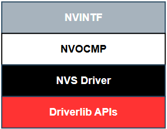
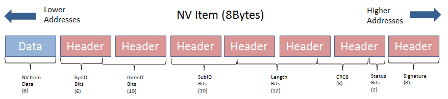

NVS¶
Introduction¶
Non-Volatile Storage (NVS) is a driver that provides a way to store data in a non-volatile memory, such as flash memory. This allows applications to save data that needs to persist across device reboots or power cycles. NVS uses low level driverlib APIs to read, write and erase data on flash memory. It is commonly used for storing configuration settings, calibration data, user preferences, and other small pieces of information that need to be retained even when the device is powered off. NVS is designed to be lightweight and efficient, making it suitable for use in embedded systems with limited resources.
NVOCMP Module¶
Non-Volatile On Chip Multiple Page (NVOCMP) is a module that provides an abstraction layer for managing non-volatile storage (NVS) in embedded systems. It is designed to handle the complexities of writing and reading data to and from flash. The NVOCMP module provides a set of APIs that allow developers to easily read, write, and manage data in NVS without needing to deal with the low-level details of the memory hardware. NVOCMP offers the following features:
- Thread safe access to non volatile memory
- ID based system that decouples a storage item from its address in memory
- Space efficient storage with automatic compaction
- Power loss tolerant data preservation
Non Volatile Interface (NVINT)¶
The NVINTF is an abstraction layer that defines a common set of APIs for interacting with NVOCMP using an ID system. This common set of APIs allow for new methods of NV storage to be implemented without changing the API calls in the stack and application. The ID system is most efficient because it decouples the data stored from its address in flash. This is necessary because flash banks must have the entire sector erased before writing again. Using the ID system, when an NV item needs to be updated, it can simply be invalidated and stored again at a different address. Once the NV system becomes full of unused items, a compaction will occur. A compaction is the removal of unused items.
This interface is defined in nvint.h header file. The NVINTF is not intended to be changed by the customer, but instead used as is.
The implementation of the NVINTF is done in the NVOCMP module. This software relies on several layers which are illustrated below.

NVOCMP Operation¶
The NVOCMP module implements a non-volatile memory system that utilizes multiple consecutive pages of Flash memory. After initialization,
all pages except one are “active” and the remaining one page is available for “compaction” when the active pages do not have enough
empty space for data write operation. Compaction can occur “just in time” during a data write operation or “on demand” at application
request. The compaction process is designed to survive a power cycle before it completes. It will resume where it was interrupted and
complete the process. The number of NV pages can be set by the NVOCMP_NVPAGES preprocessor define. If this is not set, it will
default to 2.
Each flash page contains a “page header” which indicates its current state. The page header is located at the first byte of the flash page. Following the page header is the “compact header”, which indicates the flash page’s compaction state. The remainder of the flash page contains NV data items which are packed together.
Each NV data item is unique and has two parts:
- A data block which is stored first (lower memory address)
- An item header following the data block (higher memory address)
The item header (defined by NVOCMP_itemHdr_t) contains status information required to traverse packed data items in the flash page.
An example of the NV item memory layout storing a single byte of data is illustrated below.

NV Item Header breakdown:
| Field | Size (bits) | Purpose |
|---|---|---|
| System ID | 6 | Indicates the system component identifier |
| Item ID | 10 | Indicates the item data identifier |
| Sub ID | 10 | Identifier of the sub-data related to the NV item |
| Length | 12 | Length of the NV item data in bytes |
| CRC | 8 | CRC checksum of the NV item |
| Status Bits | 2 | Indicates CRC integrity and if item is active |
| Signature | 8 | Used to detect presence of a NV item in flash |
For each NV item that is added or updated in NV storage, the item is written to the next lowest available memory address in the active flash page. If the NV item is being updated, the old NV item will be marked as inactive. Inactive items are removed from memory when a memory compaction takes place.
For more information, see the API documentation in nvocmp.h and the design description in nvocmp_cc35xx.c.
NVOCMP APIs¶
The interface to NVOCMP is function pointer based. The function pointers are defined in the NVINTF_nvFuncts_t structure.
//! Structure of NV API function pointers
typedef struct nvintf_nvfuncts_t
{
//! Initialization function
NVINTF_initNV initNV;
//! Compact NV function
NVINTF_compactNV compactNV;
//! Create item function
NVINTF_createItem createItem;
//! Update item function
NVINTF_updateItem updateItem;
//! Delete NV item function
NVINTF_deleteItem deleteItem;
//! Read item function based on ID
NVINTF_readItem readItem;
//! Read item function based on Content
NVINTF_readContItem readContItem;
//! Write item function
NVINTF_writeItem writeItem;
//! Get item length function
NVINTF_getItemLen getItemLen;
//! Iterator Like doNext function
NVINTF_doNext doNext;
//! Lock item function
NVINTF_lockNV lockNV;
//! Unlock item function
NVINTF_unlockNV unlockNV;
//! Expect compact function
NVINTF_expectComp expectComp;
//! Erase NV function
NVINTF_eraseNV eraseNV;
//! Get Free NV function
NVINTF_getFreeNV getFreeNV;
#ifdef ENABLE_SANITY_CHECK
//! Sanity Check function
NVINTF_sanityCheck sanityCheck;
#endif
} NVINTF_nvFuncts_t;
Code examples¶
The following code snippet illustrates how to initialize the NVOCMP module and create, read, update, and delete an NV item.
#include "nv/nvint.h"
#include "nv/nvocmp.h"
// Defines for Item ID structure
// Change to appropriate values for the application
#define APPLICATION_SYSID 100
#define APPLICATION_ITEMID 2
#define APPLICATION_SUBID 4
static NVINTF_nvFuncts_t NVIF;
NVINTF_itemID_t item;
char payloadRead[256];
char payloadWrite[] = "Hello, NVS!";
uint8_t ret;
NVOCMP_loadApiPtrs(&NVIF);
if (NVIF.initNV) {
// Set appropriate values for Item ID structure
item.systemID = APPLICATION_SYSID;
item.itemID = APPLICATION_ITEMID;
item.subID = APPLICATION_SUBID;
ret=NVIF.initNV(NULL);
ret = NVIF.readItem(item, 0, strlen(payloadWrite), payloadRead);
if (ret == NVINTF_SUCCESS) {
// Item is successfully read.
// Overwrite the item
ret = NVIF.writeItem(item, strlen(payloadWrite), payloadWrite);
} else {
// Item does not exist, create it
ret = NVIF.createItem(item, strlen(payloadWrite), payloadWrite);
}
// To delete an item
ret = NVIF.deleteItem(item);
}